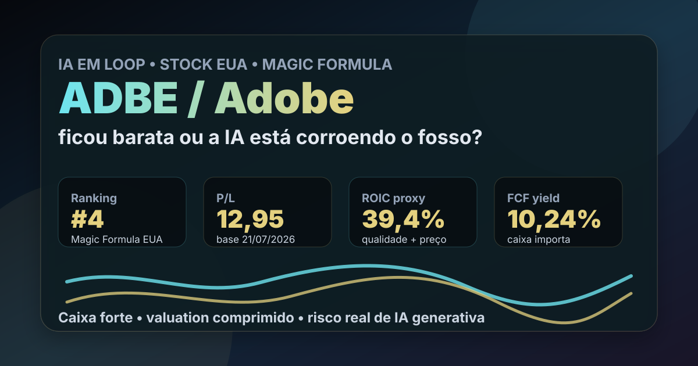

22/07: ADBE, Adobe e o teste do fosso na era da IA
Depois de uma sequência de ações brasileiras, a pauta volta para stocks EUA. ADBE aparece no Top 5 da Magic Formula EUA 2026-08 e traz uma pergunta perfeita para o IA em Loop: a Adobe ficou barata demais ou o mercado está vendo a IA generativa corroer parte do seu fosso competitivo?

ADBE combina caixa forte, margens altas e valuation comprimido. O contraponto é direto: se a IA reduzir o poder de preço da Adobe, o múltiplo baixo pode ser aviso, não oportunidade automática.
Resposta curta: caso forte, dúvida legítima
Adobe é uma empresa de software com marca global, base profissional, receita recorrente e forte geração de caixa. No ranking IA em Loop de agosto, ADBE entrou em 4º lugar na Magic Formula EUA, com P/L de 12,95, EV/EBITDA de 9,74, ROIC proxy de 39,40% e FCF yield de 10,24%, usando dados de mercado com base em 21/07/2026.
Isso parece atraente para uma empresa de software historicamente premium. Mas a parte importante é o “parece”. A queda do preço pode refletir não apenas oportunidade, mas uma mudança de percepção: o mercado está questionando se ferramentas de IA generativa, Canva, Figma e novos fluxos criativos conseguem reduzir o poder de preço da Adobe.
O que os números verificados dizem
A checagem via SEC, no CIK 0000796343, confirma que a Adobe segue publicando dados financeiros robustos. Nos fatos SEC mais recentes consultados, a companhia apresentou, no período encerrado em 29/05/2026, US$ 13,016 bilhões de receita, US$ 3,601 bilhões de lucro líquido, US$ 4,656 bilhões de lucro operacional e US$ 5,123 bilhões de caixa operacional.
O capex reportado no mesmo recorte foi de US$ 95 milhões. Para um negócio de software, essa combinação importa: muita geração de caixa, investimento físico baixo e margem operacional elevada. A tese pró-Adobe começa aqui: se o mercado tratou ADBE como se o fosso tivesse acabado, pode ter exagerado.
Na checagem de cotação desta publicação, ADBE negociava perto de US$ 221,92 em 22/07/2026, contra máxima de 52 semanas de US$ 376,16. Isso implica queda aproximada de 41% frente ao topo de 52 semanas. A pergunta do post nasce dessa assimetria: desconto relevante em empresa de caixa forte ou repricing correto de um risco tecnológico maior?
| Métrica verificada | Período | Valor | Leitura |
|---|---|---|---|
| Receita | 10-Q 2026 Q2 | US$ 13,016 bi | escala ainda relevante |
| Lucro líquido | 10-Q 2026 Q2 | US$ 3,601 bi | rentabilidade preservada |
| Lucro operacional | 10-Q 2026 Q2 | US$ 4,656 bi | margem operacional forte |
| Caixa operacional | 10-Q 2026 Q2 | US$ 5,123 bi | qualidade de caixa |
| Capex | 10-Q 2026 Q2 | US$ 95 mi | modelo pouco intensivo em capital |
Por que a IA virou o centro da tese
Durante anos, o argumento pró-Adobe era relativamente simples: Photoshop, Illustrator, Premiere, Acrobat e Creative Cloud eram quase infraestrutura para designers, empresas, agências e criadores. A assinatura recorrente transformou esse ecossistema em uma máquina de caixa.
A IA generativa mudou a pergunta. Não basta saber se a Adobe tem bons produtos; é preciso saber se a empresa consegue transformar IA em receita incremental sem perder pricing power. Se Firefly e os recursos nativos de IA reforçarem o ecossistema, a queda pode parecer exagerada. Se usuários substituírem fluxos pagos por ferramentas mais baratas ou gratuitas, o desconto pode ser justo.
ADBE é um caso de qualidade sob teste. Os números mostram caixa e margem; o mercado questiona crescimento, competição e monetização de IA. O estudo não é sobre “comprar porque caiu”, mas sobre separar queda de preço de quebra de tese.
O que o noticiário recente acrescenta
A leitura pública por Google News RSS em 22/07/2026 trouxe sinais mistos. De um lado, apareceram leituras sugerindo que ADBE ainda parece barata após forte queda. De outro, houve notícia de corte de rating pelo Morgan Stanley, com argumento de risco de IA e melhor monetização de IA em outros nomes. Também apareceu notícia sobre compra da Topaz Labs e aceleração de receita ligada a IA.
Esse conjunto é útil porque mostra que a tese está aberta. Não é uma história consensual. Há investidores olhando geração de caixa e múltiplos; há outros olhando risco competitivo e concluindo que o mercado pode preferir empresas com captura de IA mais evidente.
O que favorece e o que ameaça a tese
Favoráveis
• Ecossistema profissional forte e global.
• Receita recorrente e base instalada ampla.
• Alta margem e forte caixa operacional.
• Capex baixo, típico de software escalável.
• Top 5 no pipeline Magic Formula EUA 2026-08.
Desfavoráveis
• IA generativa pode reduzir barreiras de entrada.
• Concorrência de Canva, Figma e ferramentas nativas de IA.
• Downgrade recente reforça que o risco já está no radar institucional.
• Crescimento precisa justificar o múltiplo, mesmo depois da queda.
• Dados quantitativos não substituem leitura qualitativa do moat.
Checklist para acompanhar daqui em diante
| Ponto | O que monitorar | Se falhar |
|---|---|---|
| Receita de IA | Firefly e recursos de IA devem gerar monetização real | IA vira custo defensivo, não motor de crescimento |
| Assinaturas | Creative Cloud precisa preservar retenção e preço | o fosso pode estar menor do que o histórico sugere |
| Concorrência | Canva/Figma/modelos abertos não podem capturar o núcleo profissional | múltiplo baixo pode ser desconto estrutural |
| Caixa | geração de caixa deve seguir forte após investimentos em IA | a Magic Formula perde parte do apelo |
| Preço | desconto precisa vir acompanhado de estabilidade operacional | a queda pode ser armadilha de valor |
Conclusão
ADBE é um bom primeiro candidato para recolocar stocks EUA no blog porque reúne três elementos didáticos: empresa excelente, preço pressionado e risco tecnológico real. A tese não depende de acreditar cegamente em IA, nem de rejeitar a Adobe por medo de disrupção. Depende de acompanhar se a empresa consegue transformar IA em defesa do ecossistema e receita incremental.
A leitura do IA em Loop é: ADBE merece estudo aprofundado, mas não leitura automática de oportunidade. Os números atuais justificam atenção; os riscos de IA justificam prudência. O ponto central é acompanhar se a Adobe preserva crescimento, retenção e poder de preço enquanto incorpora IA aos produtos.